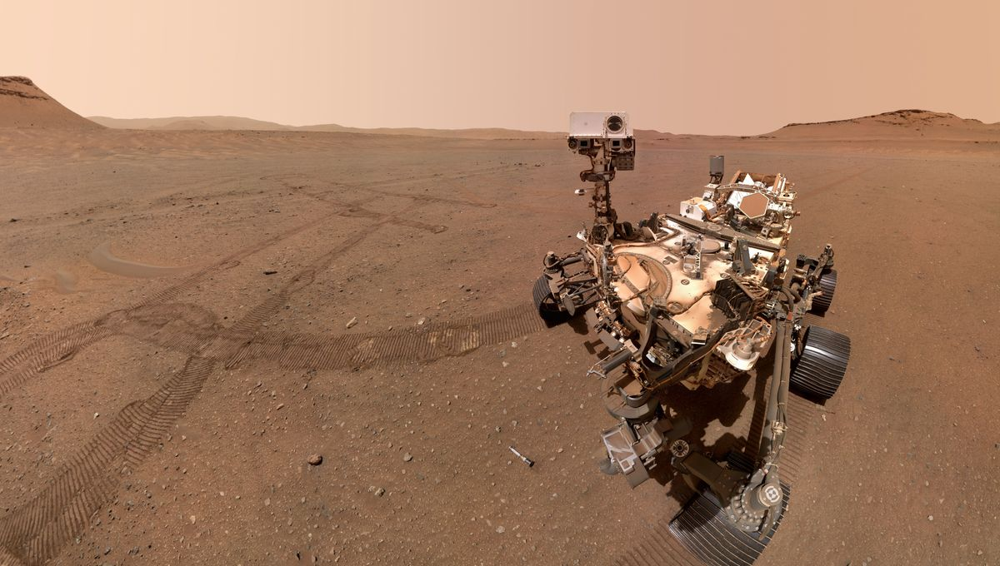
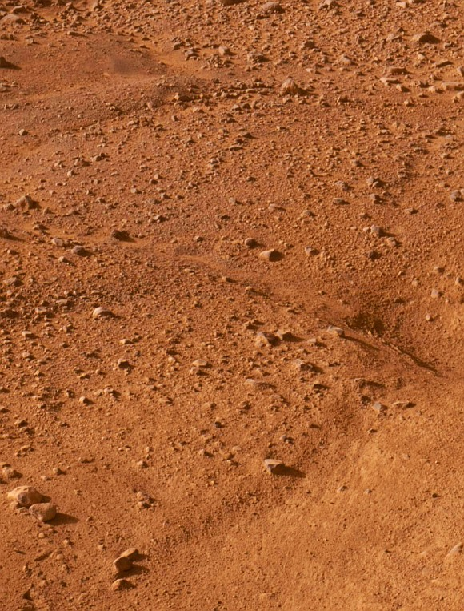
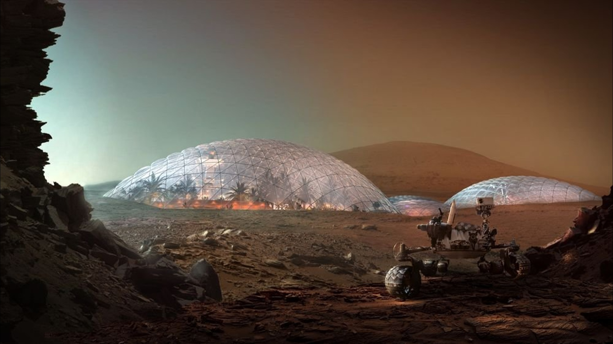

Чем можно заняться на Марсе?
|  |
На Марсе можно любоваться шикарными видами!Бескрайние пустыни, гигантские полярные льды и голубое небо на краю величественного кратера! Все эти впечатления можно получить исключительно на красной планете! |
|---|---|
|  |
Можно принять восхитительные ванны из красной грязи!Ванны из красной глиной подарят вам долголетие, о котором не мечтали даже античные Боги! |
|  |
Развитые полисы и прекрасная инфраструктура!От развитых и технологичных мегаполисов Нью-Бредбери, Циолковска и Маск-сити, до маленьких, но уютных колоний-поселений. Здесь каждый найдёт место себе по душе! |